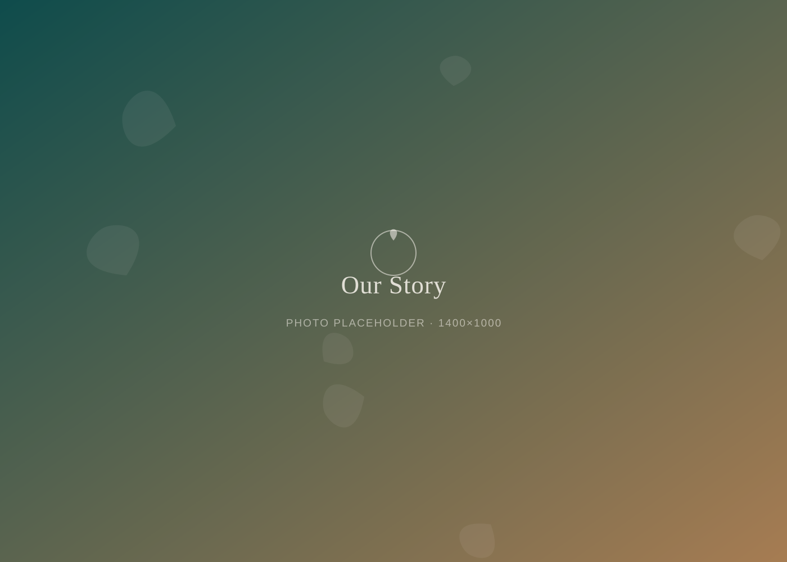
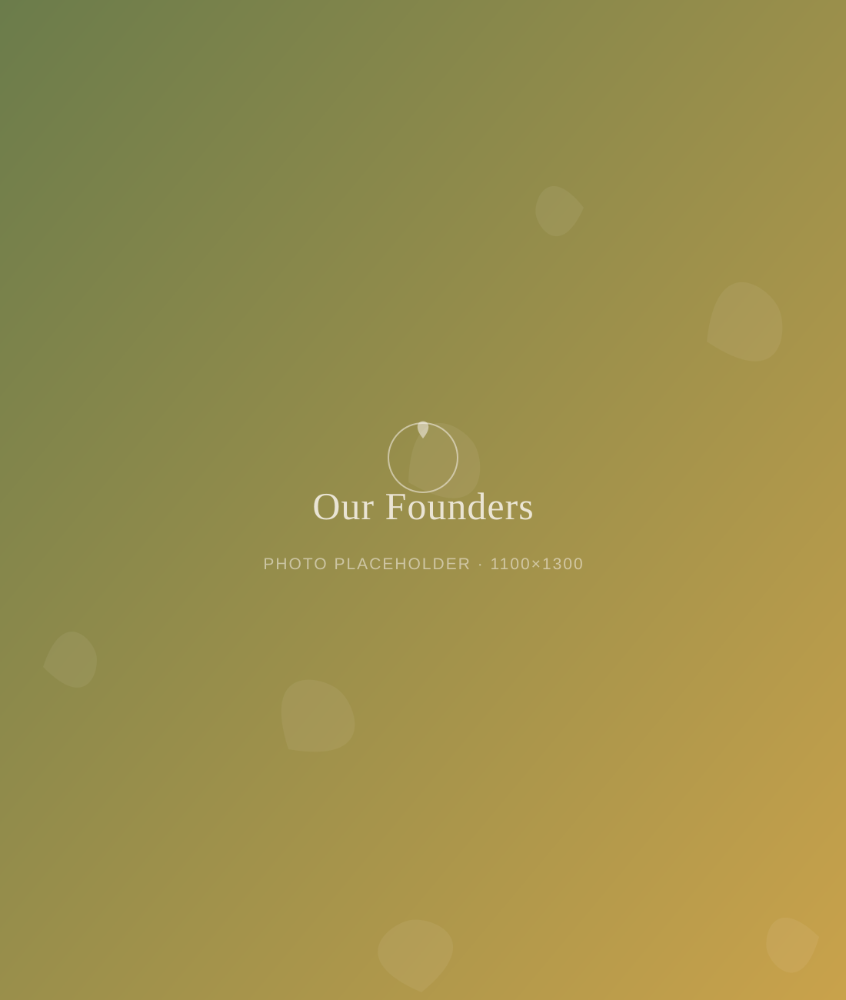

Our Story
Built by people who missed gathering places that didn't need a bar tab
How We Started
A front porch that grew into a whole building
Vine & Sunset started with three friends, a card table, and a pot of hibiscus tea on a porch in Highland Square. We kept noticing the same thing: our favorite nights weren't about what we were drinking. They were about who was around the table.
In 2024, we turned that porch into a nonprofit. We found a sunny building on West Market Street with room for a bar, a stage, a reading nook, and a treatment room — and we filled it with everything Akron told us it wanted more of: real conversation, live music, good books, and a doctor who actually has time for you.

What We Stand For
Our values, plainly stated
Belonging first
Everyone gets the same warm welcome, whether it's your first visit or your hundredth.
Natural, always
Real botanicals, honest ingredients, and naturopathic care — no shortcuts, no fillers.
Curiosity over judgment
Whether you drink alcohol elsewhere or never touch it, you're welcome at our bar.
Community over profit
We're a nonprofit. Every dollar we make goes right back into free programs and this space.

The Space
One building, nine reasons to stay
We built Vine & Sunset to be more than a bar. It's a botanical elixir bar, a non-alcoholic bottle shop, a community event space, a live music venue, a local artisan marketplace, a book and gift shop, a home for wellness programs, an onsite naturopathic practice, and a hub for nonprofit community programs — all under one roof.
Plan Your Visit